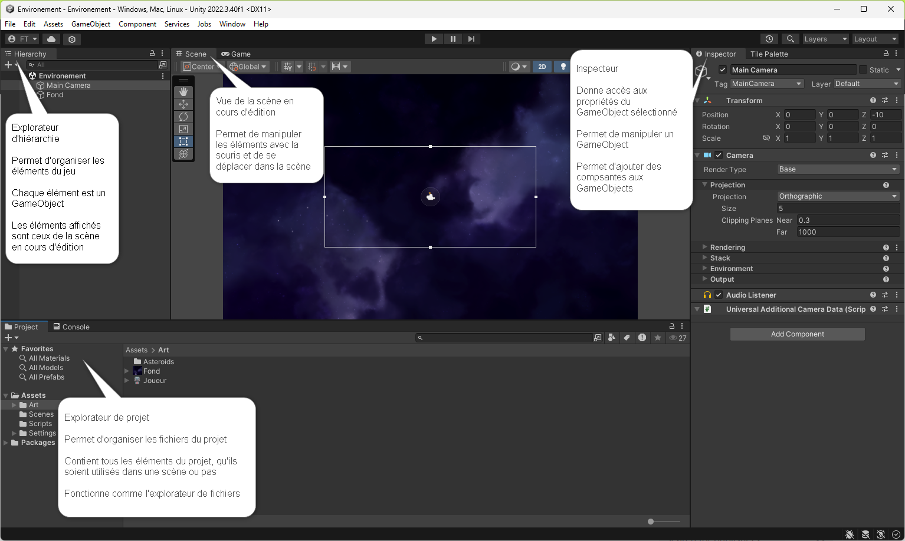

Environement de développement
Éléments de compétence ciblés
00SW - 2 : Préparer l’environnement de développement informatique 00SW - 3 : Générer des représentations de mondes réels ou imaginaires
Habiletés
- Importer les sources
- Intégrer des images, scripts et objets
Le moteur de jeu Unity
Un jeu ou une simulation est enrigistrée dans un dossier du même nom que le projet de développement.
Pour éviter les erreurs et faciliter le travail, créez un dossier dédié sur votre disque.
ATTENTION! : Créer le dossier ailleurs que dans votre dossier Documents ou One Drive (ou tout autre dossier infonuagique).
Ajouter un projet existant
- Télécharger le projet Environnement dans la section fichiers de votre groupe Teams pour le cours.
- Démarrer Unity Hub
- Dans la section Projects, cliquer sur ajouter puis repérer le dossier du projet et l'ouvrir.
Interface
- Quatres fenêtres principales : Hierarchy, Scene, Project, Inspector

En pratique
Créer et ouvrir une scène
- Dans l'explorateur de projet choisir le dossier Scenes
- Dans la sectoin à droite, ouvrir le menu contextuel (clique droit)
- Choisir Create > Scene puis renommer la nouvelle scène.
- Ouvrir la nouvelle scène en la double cliquant dans l'explorateur de projet
- Revenir à la scène Environement
Explorer la scène
- Dans la fenêtre de scène, utiliser le bouton de droite ou le bouton central pour cliquer et glisser.
- Remarquer que le curseur se change en main et on déplace le point de vue que nous avons sur la scène.
- Les flèches du clavier sont un autre moyen de déplacer le point de vue.
- Dans la fenêtre de hiérarchie, double cliquer un GameObject. La vue de scène est centrée sur cet élément.
- Il est possible de sélectionner l'élément et utiliser la touche F pour faire la même chose.
- Double cliquer le GameObject fond permettra d'avoir une vue d'ensemble de la scène.
Créer et modifier un nouveau GameObject
- Dans l'explorateur de projet, ouvrir le dossier Art puis cliquer et glisser l'item Joueur dans la vue de la scène.
- Remarquer les changements, on voit le joueur dans la scène et un GameObject a été crée dans la fenêtre de hiérachie.
- Sélectionner le GameObject Joueur dans le fenêtre de hiérarchie.
- Dans l'inspecteur localiser les propriétés X et Y. Modifier la valeur pour 0.
- Le joueur est maintenant au centre de la scène.
- Sauvegarder votre projet par le menu File > Save ou le raccourci CTRL + S
Tester le résultat en mode jeu
- Le mode jeu permet de tester une scène.
- Localiser et activer le bouton lecture en haut de la fenêtre de scène.
- On peut maintenant voir le résultat de notre scène telle que le joueur la voit. Il ne se pas grand chose pour le moment!
- Sortir du mode jeu en cliquant le bouton lecture.
Modifier un GameObject en ajoutant des composantes (Component)
- Localiser le dossier Script dans l'explorateur de projet.
- Avec le GameObject Joueur sélectionné, cliquer et glisser le script MvmtJoueur dans une zone vide de l'inspecteur.
- Un nouveau component MvmtJoueur, de type script, se retrouve dans la liste des composantes.
- Tester le résultat, le joueur se déplace latéralement avec les touches AD
Modifier les éléments dans la fenêtre de scène
- Sélectionner le Joueur dans la fenêtre de hiérarchie
- Localiser et cliquer sur l'outil de déplacement dans la fenêtre de scène (flèche 4 directions en dessous de la main)
- Deux flèches apparaissent (verte et rouge).
- Utiliser les flèches dans la vue de scène pour placer le joueur vers la gauche et au centre de la caméra (bordure blanche).
- Sélectionner l'outil de rotation (en-dessous de l'outil de déplacment).
- Tester les effets de rotation en utilisant les nouveaux indicateurs (cercles vert, rouge, bleu).
- Utiliser l'inspecteur pour placer le joueur à : X = -5 et Y = 0, toutes les rotations à 0
Éditer un script
- Dans la fenêtre de projet sélectionner le dossier Scripts et double cliquer MvmtJoueur.
- L'éditeur de code sélectionné pendant l'installation s'ouvre avec le script chargé.
- Analyser le script et ajouter le mouvement vertical en assignant la touche W et S aux déplacements vers le haut et le bas respectivement.
- Sauvegarder le script.
- Tester le résultat en mode jeu, le joueur devrait pouvoir se déplacer dans toutes les directions.
Références et approfondissement
Aller plus loin
- Ajouter 2 astéroides à la scène, le visuel est dans le dossier Art.
- Créer un nouveau script dans le dossier Scripts.
- En s'inspirant du script de déplacement du vaisseau, utiliser la composante rotation pour faire tourner les astéroides sur eux-même.
- Assigner le script aux 2 astéroides et tester la scène.
- Le vaisseau et les astéroïdes sont trop gros, utiliser la propriété Scale pour modifier la taille du vaisseau tout en gardant les proportions